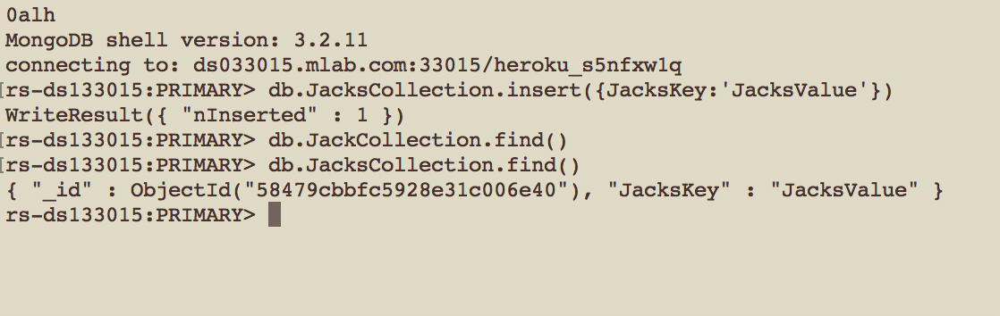

Security Assessment of
https://fathomless-earth-39413.herokuapp.com
Knowing that Heroku Apps are usually run from a file called 'index.js' I decided to see what would happen if I sent a GET request to
http://fathomless-earth-39413.herokuapp.com/index.js. The response was the 'index.js' file that handles all server-side processes.
This happens because of line 13 in index.js:
app.use(express.static(__dirname + '/')); This line comes before enabling any other middleware or routes are set, so when the server receives a request the very first thing it does is see if a file exists on the server with the request path. If it does, that file is immediately returned as a response. Static content that is meant to be servered to anyone should be stored in a sub-directory on the server, maybe named something like 'public.' Then line 13 should be changed to app.use(express.static(__dirname + '/public')); Line 13 is also repeated on line 27 and that line should be removed.
Exploiting this vulnerability to get the server's source code made finding the other vulnerabilities pretty easy.
The gamecenter page is vulnerable to cross site scripting. Using the POST
/submit.json route an attacker can submit HTML content as the value for 'username'. This HTML will be rendered on the gamecenter page. If it includes any Javascript inside <script> </script> tags, this Javascript will be executed. Visit the site here for proof. (It's worth it).

This is the most serious vulnerability, as it is the only one that could reach beyond the scope of the game to harm users. The vulnerability could aid an attacker in carrying out CSRF attacks on anyone that visits the gamecenter and has an ongoing session at another site vulnerable to CSRF.
There are two things that must be implemented to protect against this. User input must be cleaned before storing it in the database. Also, when things from the database are sent to the client to be rendered in the browser any special characters should be escaped as well. This protects users in the case that the database is compromised and an attacker can directly deposit Javacript or HTML in the database.
The GET
'/scores.json' route is susceptible to injections, mainly because the 'bodyparser' middleware is used with the urlencoded.extended option set to true. This causes query strings to be parsed using the 'qs' module. The 'qs' module allows users/attackers to construct JSON objects in the query string using the format: ?targetKey[arbitrarySubKey]=somevalue. The middleware will interpret this query as: { targetKey : {arbitrarySubkey : somevalue} }
When an attacker sends a GET request to '
/scores.json?username[$gt]=' the value of 'username' is interpreted as {$gt : } This is a Mongo query selector that will select all documents with non-null values for a given field. This GET request will thus return every score document with a non-null username. This isn't a huge privacy concern, however, as all those documents are publicly available and nicely organized on the gamecenter page. To fix it either stop using the 'qs' module or ensure only a string will be used as the value for the 'username' key in the Mongo query.
Although it isn't particularly dangerous for users, the integrity of the scoreboard is easily compromised as anyone can send a POST request to '
/submit.json,' submitting a new (possibly fake) high score. To prevent this the server could check that all POST requests originate from a known 2048 game page, eg. if (req.origin == 'someknownorigin') { process request }
Looking at the server code revealed admin MongoDB credentials are hard-coded on line 13. As it stands, the server first looks for Mongo credentials in the environment variables, and if it cannot find them defaults to the hard-coded database URL. This means fixing it should be pretty easy, just remove the hard coded URL from the end of the line and everything should continue to work just fine.
The severity of this issue depends on who has access to the source code. Regular visitors to the site can't exploit it, but anyone who has access to or gets the server cource code will have total control over the Mongo database. Unfortunately, Vulnerability 1 means that anyone who simply requests index.js has access to the source code.
